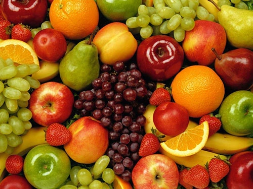

总结：
1、网页制作中，如果要使用不透明背景的图片，就使用jpg图片；如果要使用透明或者半透明背景的图片，就使用png图片；
2、制作网页图标时候，如果图标含多种颜色，可以使用gif或png图片；如果图标是单色，而且要求有很好的显示效果，可以使用svg；如果是动画图标，可以使用gif。
jpg图片格式
它不能存为透明背景

gif图片
有锯齿
它的背景可以是透明的，但不能是半透明的

png图片
背景可以是透明或者半透明的，透明图像边缘光滑，没有锯齿


webp图片
WebP格式图像的体积要比jpg格式图像小40%，不过这种图片还没有得到广泛的浏览器支持，仅在Chrome和Opera上支持

以上的都是位图
由多个点组成的
svg图片

swf图形
属于矢量图
位图和矢量图
位图放大会失真 因为是由很多点组成的，一般比较丰富多彩的都是位图
矢量图 一般使用曲线画出来的。